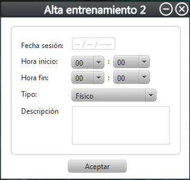

Alta de entrenamiento
Esta es la pantalla de alta de entrenamiento.

Para dar de alta un entrenamiento se deben de rellenar todos los campos que se pueden ver en la imagen.
La -Fecha sesion- hace referencia a la fecha exacta en la que se realizo dicho entrenamiento.
La -Hora inicio- y -Hora fin- marca el inicio y el final del entrenamiento.
El -Tipo- se elegira seleccionando el desplegable y marcando la opcion deseada.
La -Descripcion- mostrara un breve resumen del entrenamiento realizado.
Por ultimo, seleccionando el boton -Aceptar- se dara de alta el entrenamiento realizado.